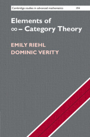
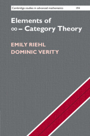

© 2022 Emily Riehl & Dom Verity
All rights reserved.
Site created with
Hakyll.
Modified theme
lanyon-hakyll
based on
Lanyon.

© 2022 Emily Riehl & Dom Verity
All rights reserved.
Site created with
Hakyll.
Modified theme
lanyon-hakyll
based on
Lanyon.
Have you found an error in the book which is not listed here? Please email Emily or Dom with the details.
All errata shown in the following list have already been corrected in the online version.
Move along, there’s nothing to see here 😸